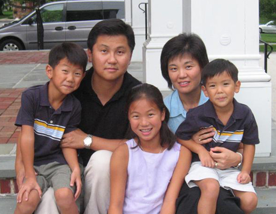

1. God LOVES you, and has a wonderful PLAN for your life.
"For God so loved the world that He gave His one and only Son, that whoever believes in Him shall not perish, but have eternal life.” John 3:16
2. People are SINFUL and SEPARATED from God. Because of this, we cannot know and experience God's love.
"For the [result] of sin is death" -- spiritual separation from God.” Romans 6:23
3. Jesus Christ is God's ONLY provision for our sin. Through Him you can know and experience God's love and plan for your life.
"Jesus answered, 'I am the way, and the truth, and the life; no one comes to the Father, but through Me.’” John 14:6
4. We must individually RECEIVE Jesus Christ as Savior and Lord; then we can know and experience God's love and plan for our lives.
“Yet to all who received him, to those who believed in his name, he gave the right to become children of God.” John 1:12
You can receive eternal life right now by faith through prayer
Lord Jesus, I need you! Thank You for dying on the cross for my sins. I receive You now as my Savior and Lord. Thank You for forgiving my sins and giving me eternal life. Take control of my life and make me the kind of person You want me to be. In your name I pray, Amen
Ministry
Sunday Service
Mainline Site: 9:30am at the Baldwin School
University City Site:11:15am at Meyerson B-1
Temple Site: 11:30am at the Owl Cove in Mitten Hall
Family Groups meet throughout the week for Bible study and fellowship in a smaller setting. Our family groups are a great way to get involved in our church.
College: Andy Park apark@gracecovenant.net
Single Adults/Married Couples: PaShawnda Briley pbriley@gracecovenant.net
Friday Night Live meets at 7:30pm at DRL (33rd & Walnut).
Morning Prayer UC: Wed and Friday at Ralston House (36th & Chestnut). �7:00am
Welcome!
We’re glad you visited Grace Covenant Church! As you take a look around, we hope you will catch a glimpse of what God is doing at GCC University City.
If you like videos, check out our Intro Video
Our doors are wide open to people from all backgrounds. Whether you are a spiritual seeker just beginning to ask questions about God or a committed Christian wanting to deepen your faith, Grace Covenant Church is a place you can call home and find spiritual help, hope, and encouragement. Wherever you are in your spiritual journey, we invite you to discover GCC—and discover for yourself God’s wonderful love and plan for your life!
What makes us unique? It isn’t our beliefs. We affirm the same basic Christian doctrines that have been a part of the Church for hundreds of years. Rather, we are committed to presenting these truths in a practical, relevant, contemporary, and loving manner. Our desire is to introduce you to Jesus Christ and to help you grow and become a kingdom worker. We want to help you to become a kingdom worker who can influence the world around you with the love of Jesus Christ.
Our church is comprised of a network of “family groups”; small group settings where honest friendships, Bible study, constant prayer, and compassionate care are emphasized. It is within these dynamic family groups where the core of our evangelism and discipleship take place. We invite you to become of a part of these contagious Christian communities that strive to influence and encourage one another.
Again, whether you’re a spiritual seeker who’s just starting to ask questions about God, or a committed Christian who wants to sink the roots of your faith even deeper, you can find a home here at Grace Covenant Church.
in Christ,
the GCC Staff
Young C. Kim

From Left to Right: Daniel, Pastor Young, Sarah, Annette, and Isaiah
Pastor Young C. Kim - pastoryoung@gmail.com
Pastor Young Kim is the Senior Pastor of Grace Covenant Church in Philadelphia.
After receiving his initial calling into ministry as a Bio-Engineer at the University of Illinois at Champaign-Urbana, he finished his Master of Divinity at Biblical Theological Seminary (1989-1992). He also finished his Masters in Urban Missions at Westminster Theological Seminary (1995-1996).
In 1996, he planted Grace Covenant Church with a vision to be a multi-ethnic church that will raise kingdom workers for the harvest of the world to the glory of God.
God has blessed Pastor Young and his wife Annette with His precious gifts in Sarah, Daniel, and Isaiah.
"My prayer is that the Holy Spirit may empower me to love Jesus with all my heart, mind, strength and soul and to love others with the love of God."
Annette Kim
Birthplace/hometown: Chicago, IL
Degrees: B.S. Chemical Engineering, University of Illinois